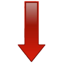

Download on my freebox
URL de la freebox pour l'accès à distance :
Mot de passe :
Démon transmission
authentification
(login:freebox, mdp: mot de passe freebox)
Le Démon transmission n'est pas accessible en accès distant
Afficher les popups de fin de téléchargement
Save